Chapter 4 Delineamentos simples
4.1 Delineamento Inteiramente Casualizado
O Delineamento inteiramente casualizado é considerado o delineamento mais simples dentro da estatistica. No DIC as unidades experimentais são destinadas a cada tratamento de uma forma inteiramente casual (sorteio). Os experimentos formulados com este delineamento são denominados “experimentos inteiramente ao acaso.”
O DIC apresenta as seguintes características:
- Considera apenas os princípios de repetição e casulização;
- Os tratamentos são divididos em parcelas de forma inteiramente casual;
- Exige que o material experimental seja semelhante e que as condições de estudo sejam completamentes uniformes;
- Os aspectos que devem ser considerados na semelhança entre as U.E. são aqueles que interferem nas respostas das mesmas aos tratamentos;
- Ele geralmente é mais utilizado em experimentos nos quais as condições experimentais podem ser bastante controladas (por exemplo em laboratórios);
4.1.1 Vantagens
Delineamento flexível - número de tratamentos e repetições depende apenas da quantidade de parcelas disponíveis
O número de repetições pode diferir de um tratamento para o outro (experimento não balanceado)
A análise estatística é simples
O número de G.L. resíduo é o maior possível
4.1.2 Desvantagens
Exige homogeneidade das condições ambientais
Pode estimar uma variância residual muito alta
4.1.3 Modelo matemático para DIC
\[\begin{eqnarray} y_{ji}=\mu+\tau_i+\varepsilon_{ij} \end{eqnarray}\]
\(y_{ji}\): é a observação referente ao tratamento i na repetição j;
\(\mu\): é a média geral (ou constante comum a todas as observações);
\(\tau_i\): é o efeito de tratamento, com \(i = 1, 2, . . . , I\);
\(\varepsilon_{ij}\): é o erro experimental, tal que \(\varepsilon_{ij}\)~N(0; \(\sigma^2\)).
4.1.4 Hipóteses e Modelo
\[\begin{eqnarray*} \left\{ \begin{array}{ll} H_0: & \mu_1 = \mu_2 =\mu_i\\[.2cm] H_1: & \mu_i \neq \mu_i' \qquad i \neq i'. \end{array} \right. \end{eqnarray*}\]
| CV | G.L. | S.Q. | Q.M. | Fcalc | Ftab |
|---|---|---|---|---|---|
| Tratamentos | \(a - 1\) | \(SQ_{Trat}\) | \(\frac{SQ_{Trat}}{a-1}\) | \(\frac{QMTrat}{QMRes}\) | \(F(\alpha;GL_{Trat} ;GL_{Res})\) |
| resíduo | \(a(b-1)\) | \(SQ_{Res}\) | \(SQRes\) | - | |
| Total | \(ab-1\) | \(SQ_{Total}\) | - | - |
Correção
\(C = \frac{(\sum Y_{ij})^2}{ij}\)
Soma de Quadrados Total
\(SQ_{Total}=\sum Y_{ij}^2-C\)
Soma de Quadrados Tratamento
\(SQ_{Tratamento}=\frac{1}{J}\sum Y_{i}^2-C\)
Soma de Quadrados do resíduo
\(SQ_{Resíduo} = SQ_{Total} - SQ_{Tratamento}\)
Quadrado Médio do Tratamento
\(QM_{Tratamento} = \frac{SQ_{Tratamento}}{GL_{Tratamento}}\)
Quadrado Médio do Resíduo
\(QM_{Resíduo} = \frac{SQ_{Resíduo}}{GL_{Resíduo}}\)
F calculado
\(F_{Calculado}=\frac{QM_{Tratamento}}{QM_{Resíduo}}\)
4.1.5 Exemplo usando o AgroR
Considere o seguinte conjunto de dados:
rm(list=ls())
data(pomegranate)
attach(pomegranate)## The following objects are masked from pomegranate (pos = 5):
##
## AT, ratio, SS, trat, WL4.1.5.1 default
Por default, o AgroR realiza a análise de variância, teste de normalidade dos erros de Shapiro-Wilk, teste de homogeneidade das variâncias de Bartlett, teste de independência dos erros de Durbin-Watson, teste de comparação múltipla de Tukey e o gráfico de colunas.
DIC(trat, WL)##
## -----------------------------------------------------------------
## Normality of errors
## -----------------------------------------------------------------
## Method Statistic p.value
## Shapiro-Wilk normality test(W) 0.9448293 0.2087967## As the calculated p-value is greater than the 5% significance level, hypothesis H0 is not rejected. Therefore, errors can be considered normal##
## -----------------------------------------------------------------
## Homogeneity of Variances
## -----------------------------------------------------------------
## Method Statistic p.value
## Bartlett test(Bartlett's K-squared) 8.568274 0.1275737## As the calculated p-value is greater than the 5% significance level,hypothesis H0 is not rejected. Therefore, the variances can be considered homogeneous##
## -----------------------------------------------------------------
## Independence from errors
## -----------------------------------------------------------------
## Method Statistic p.value
## Durbin-Watson test(DW) 2.104821 0.1924474## As the calculated p-value is greater than the 5% significance level, hypothesis H0 is not rejected. Therefore, errors can be considered independent##
## -----------------------------------------------------------------
## Additional Information
## -----------------------------------------------------------------
##
## CV (%) = 10.84
## R-squared = 0.92
## Mean = 2.2596
## Median = 2.225
## Possible outliers = No discrepant point
##
## -----------------------------------------------------------------
## Analysis of Variance
## -----------------------------------------------------------------
## Df Sum Sq Mean.Sq F value Pr(F)
## trat 5 3.692121 0.73842417 12.31191 2.723541e-05
## Residuals 18 1.079575 0.05997639## As the calculated p-value, it is less than the 5% significance level.The hypothesis H0 of equality of means is rejected. Therefore, at least two treatments differ##
##
## -----------------------------------------------------------------
## Multiple Comparison Test
## -----------------------------------------------------------------
## resp groups
## T5 2.6375 a
## T4 2.6200 a
## T3 2.6175 a
## T6 2.1625 ab
## T1 1.8425 b
## T2 1.6775 b## 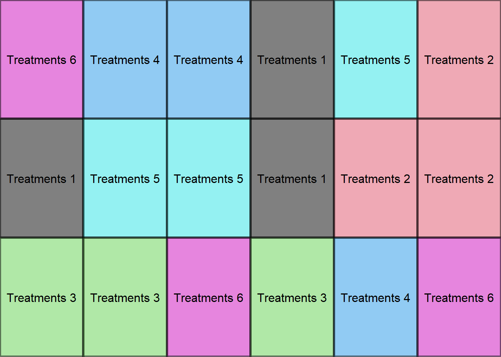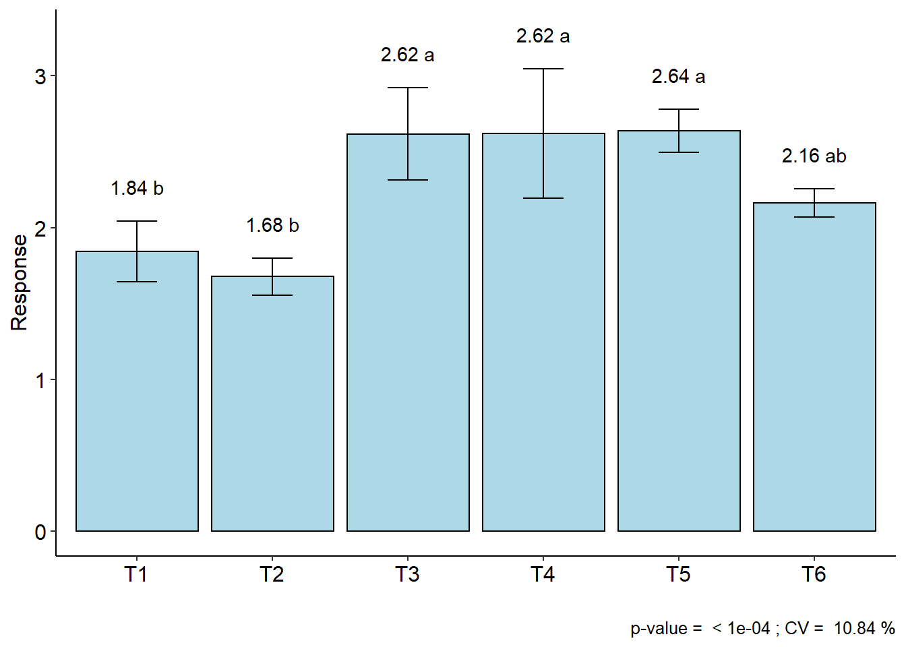
4.1.5.2 Alterando teste de médias
Para alterar o teste de médias, é necessário alterar o argumento mcomp.
DIC(trat, WL) # tukeyDIC(trat, WL, mcomp = "sk") # Scott-KnottDIC(trat, WL, mcomp = "duncan") # DuncanDIC(trat, WL, mcomp = "lsd") # LSD4.1.5.3 Alterando para teste não-paramétrico de Kruskal-Wallis
DIC(trat, WL, test = "noparametric",geom="point")##
##
## -----------------------------------------------------------------
## Statistics
## -----------------------------------------------------------------
## Chisq p.chisq
## 18.75631 0.002133687
##
##
## -----------------------------------------------------------------
## Parameters
## -----------------------------------------------------------------
## test p.ajusted name.t ntr alpha
## Kruskal-Wallis holm trat 6 0.05
##
##
## -----------------------------------------------------------------
## Multiple Comparison Test
## -----------------------------------------------------------------
## Mean SD Rank Groups
## T1 1.8425 0.19939492 5.75 c
## T2 1.6775 0.12284814 3.50 c
## T3 2.6175 0.30619983 18.25 ab
## T4 2.6200 0.42669271 17.25 ab
## T5 2.6375 0.14244882 19.50 a
## T6 2.1625 0.09429563 10.75 bc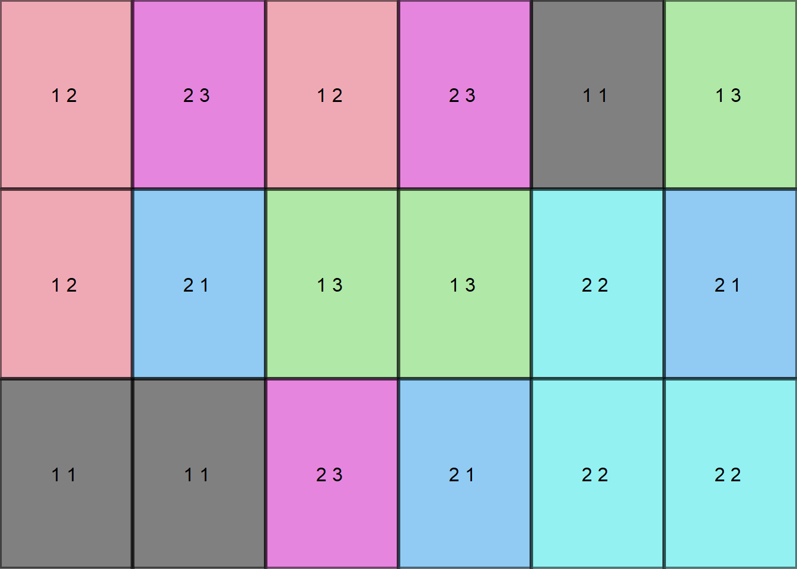
4.1.5.4 Transformando dados
- O modelo de Análise de Variância pressupõe que exista homocedasticidade, ou seja, que os tratamentos apresentem a mesma variabilidade;
- Algumas vezes este pressuposto pode não ser atendido e assim, para corrigir este problema existe uma saída por vezes bastante simples que é a transformação de dados;
- Esta técnica consiste na utilização de um artifício matemático para tornar o modelo de ANOVA válido.
4.1.5.4.1 Heterogeneidade Irregular
Ocorre quando alguns tratamentos apresentam maior variabilidade do que outros, contudo, não existe uma associação entre média e variância;
Neste caso, não há uma transformação matemática que elimine esta variabilidade.
Solução:
Modelos Lineares Generalizados;
Análise não paramétrica.
4.1.5.4.2 Heterogeneidade Regular
- Acontece quando existe alguma associação entre as médias dos tratamentos e a variância;
- A heterocedasticidade regular está associada é falta de normalidade do erros;
Solução:
Transformação dos dados;
Modelos Lineares Generalizados;
Análise não paramétrica.
4.1.5.4.3 Princípio de transformação
Seja \(E(Y) = \mu\) a média de Y e suponha que o desvio padrão de Y é proporcional a potência da média de Y tal que:
\(\sigma Y \alpha \mu^\alpha.\)
O objetivo é encontrar uma transformação de \(Y\) que gere uma variância constante.
Suponha que a transformação é uma potência dos dados originais, isto é:
\(Y^*=Y^\lambda\)
Assim, pode ser mostrado que:
\(\sigma Y^* \alpha \mu^{\lambda+ \alpha-1}.\)
Caso \(\lambda = 1-\alpha\), então a variância dos dados transformados \(Y^*\) é constante, mostrando que não é necessário transformação.
Algumas das transformações mais comuns são:
| \(\lambda\) | Transformação |
|---|---|
| 1 | Nenhuma |
| 0,5 | \(\sqrt{y}\) |
| 0 | log(y) |
| -0,5 | \(\frac{1}{\sqrt{y}}\) |
| -1 | \(\frac{1}{y}\) |
Box & Cox (1964) mostraram como o parâmetro de transformação \(\lambda\) em \(Y^* = Y^\lambda\) pode ser estimado simultaneamente com outros parâmetros do modelo (média geral e efeitos de tratamentos) usando o método de máxima verossimilhança. O procedimento consiste em realizar, para vários valores de \(\lambda\), uma análise de variância padrão sobre:
\[Y_i(\lambda) = \left\{ \begin{array}{ll} \ln(X_i),~~~~~~\textrm{se $\lambda = 0$,} \\ \\ \dfrac{X_i^{\lambda} - 1}{\lambda},~~~~\textrm{se $\lambda \neq 0$,}\end{array} \right.\]
A estimativa de máxima verossimilhança de \(\lambda\) é o valor para o qual a soma de quadrado do resíduo, SQRes(\(\lambda\)), é mínima.
Este valor de \(\lambda\) é encontrado através do gráfico de SQRes(\(\lambda\)) versus \(\lambda\), sendo que \(\lambda\) é o valor que minimiza a SQRes(\(\lambda\)).
Ou, ainda, o valor de \(\lambda\) que maximiza a função de logverossimilhança.
Um intervalo de confiança \(100(1-\alpha)\)% para \(\lambda\) pode ser encontrado calculando-se:
\(IC(\lambda) = SQRes(\lambda)(1 \pm \frac{t2^2/2=2;v }{v})\)
em que \(v\) é o número de graus de liberdade.
Se o intervalo de confiança incluir o valor \(\lambda = 1\), isto quer dizer que não é necessário transformar os dados.
No pacote AgroR, o argumento transf define a transformação solicitada, conforme a seguir:
DIC(trat, WL, transf = 0)##
## -----------------------------------------------------------------
## Normality of errors
## -----------------------------------------------------------------
## Method Statistic p.value
## Shapiro-Wilk normality test(W) 0.9694183 0.6526381## As the calculated p-value is greater than the 5% significance level, hypothesis H0 is not rejected. Therefore, errors can be considered normal##
## -----------------------------------------------------------------
## Homogeneity of Variances
## -----------------------------------------------------------------
## Method Statistic p.value
## Bartlett test(Bartlett's K-squared) 5.657984 0.3409331## As the calculated p-value is greater than the 5% significance level,hypothesis H0 is not rejected. Therefore, the variances can be considered homogeneous##
## -----------------------------------------------------------------
## Independence from errors
## -----------------------------------------------------------------
## Method Statistic p.value
## Durbin-Watson test(DW) 2.001907 0.1261966## As the calculated p-value is greater than the 5% significance level, hypothesis H0 is not rejected. Therefore, errors can be considered independent##
## -----------------------------------------------------------------
## Additional Information
## -----------------------------------------------------------------
##
## CV (%) = 12.59
## R-squared = 0.94
## Mean = 2.2596
## Median = 2.225
## Possible outliers = No discrepant point
##
## -----------------------------------------------------------------
## Analysis of Variance
## -----------------------------------------------------------------
## Df Sum Sq Mean.Sq F value Pr(F)
## trat 5 0.7834427 0.15668854 15.61523 5.318727e-06
## Residuals 18 0.1806181 0.01003434## As the calculated p-value, it is less than the 5% significance level.The hypothesis H0 of equality of means is rejected. Therefore, at least two treatments differ##
##
## -----------------------------------------------------------------
## Multiple Comparison Test
## -----------------------------------------------------------------
## resp groups respO
## T5 0.9687134 a 2.6375
## T3 0.9570245 a 2.6175
## T4 0.9537130 a 2.6200
## T6 0.7705460 ab 2.1625
## T1 0.6068284 bc 1.8425
## T2 0.5152916 c 1.6775##
## NOTE: resp = transformed means; respO = averages without transforming 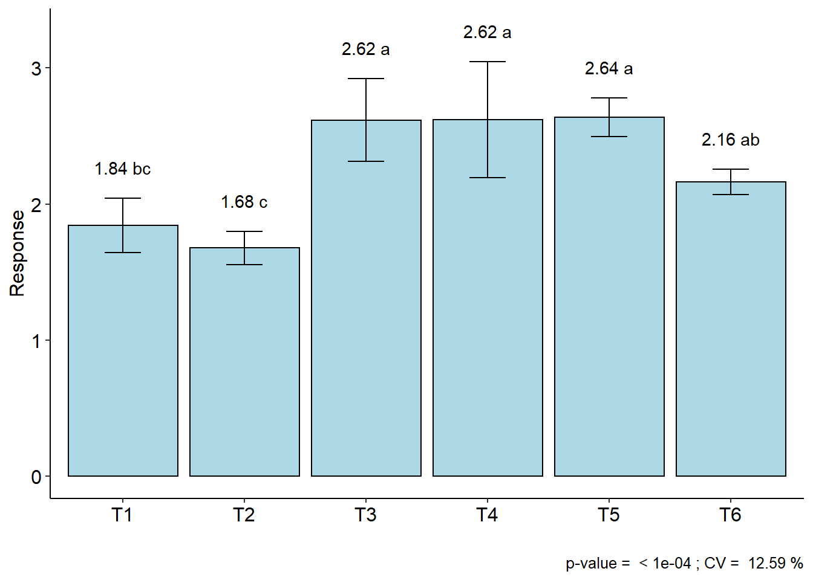
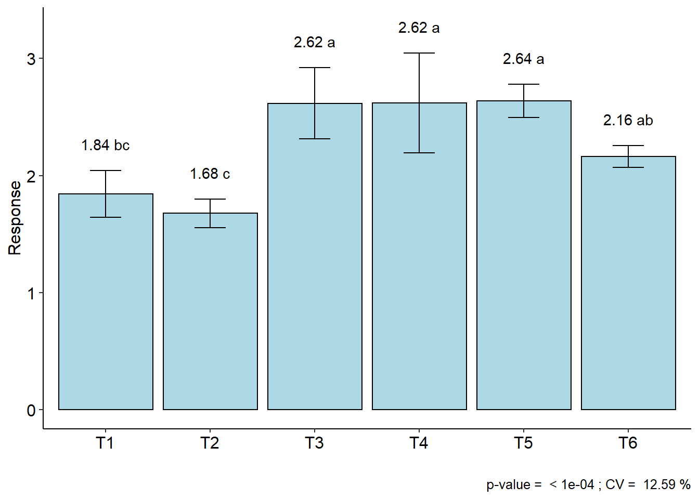
4.1.5.5 Alterando parâmetros gráficos
DIC(trat, WL, geom="point") # tipo de gráficoDIC(trat, WL, ylab = "Weight loss (%)", xlab="Treatments") # nome de eixos4.1.5.6 Para fator quantitativo
rm(list=ls())
data("phao")
with(phao, DIC(dose,comp,quali=FALSE,grau=2))##
## -----------------------------------------------------------------
## Normality of errors
## -----------------------------------------------------------------
## Method Statistic p.value
## Shapiro-Wilk normality test(W) 0.9647717 0.5174008## As the calculated p-value is greater than the 5% significance level, hypothesis H0 is not rejected. Therefore, errors can be considered normal##
## -----------------------------------------------------------------
## Homogeneity of Variances
## -----------------------------------------------------------------
## Method Statistic p.value
## Bartlett test(Bartlett's K-squared) 4.428915 0.3510598## As the calculated p-value is greater than the 5% significance level,hypothesis H0 is not rejected. Therefore, the variances can be considered homogeneous##
## -----------------------------------------------------------------
## Independence from errors
## -----------------------------------------------------------------
## Method Statistic p.value
## Durbin-Watson test(DW) 1.801827 0.08064338## As the calculated p-value is greater than the 5% significance level, hypothesis H0 is not rejected. Therefore, errors can be considered independent##
## -----------------------------------------------------------------
## Additional Information
## -----------------------------------------------------------------
##
## CV (%) = 11.71
## R-squared = 0.93
## Mean = 14.436
## Median = 15.3
## Possible outliers = No discrepant point
##
## -----------------------------------------------------------------
## Analysis of Variance
## -----------------------------------------------------------------
## Df Sum Sq Mean.Sq F value Pr(F)
## trat 4 145.8096 36.4524 12.76166 2.557884e-05
## Residuals 20 57.1280 2.8564## As the calculated p-value, it is less than the 5% significance level.The hypothesis H0 of equality of means is rejected. Therefore, at least two treatments differ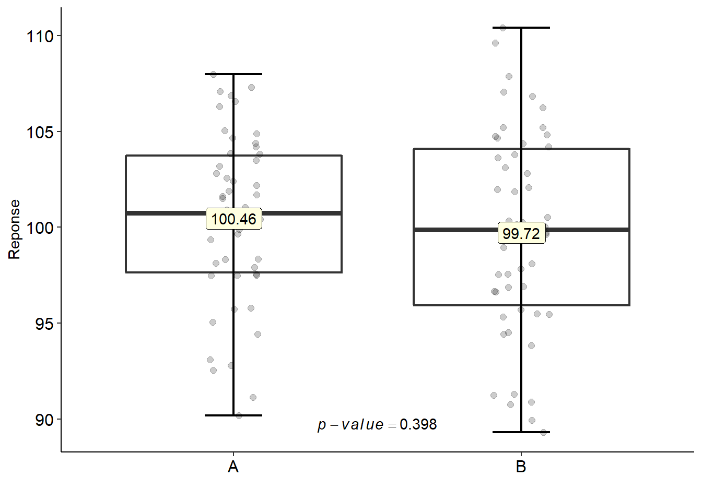
##
##
## -----------------------------------------------------------------
## Regression
## -----------------------------------------------------------------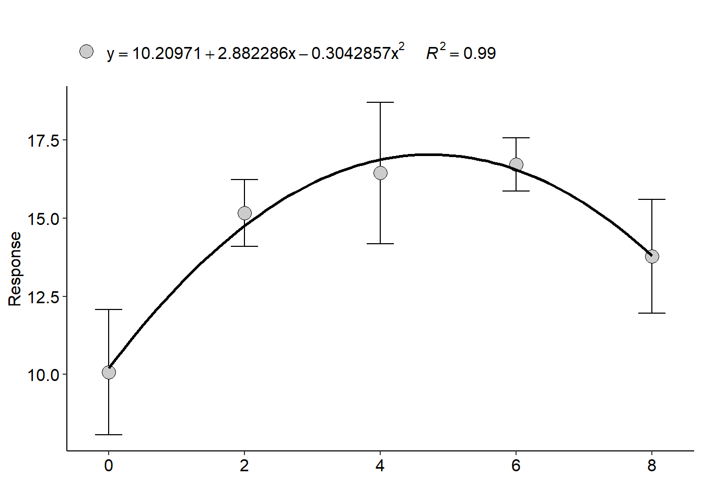
## Estimate Std. Error t value Pr(>|t|)
## (Intercept) 10.2097143 0.68981140 14.800733 6.427099e-13
## trat 2.8822857 0.40856781 7.054608 4.456995e-07
## I(trat^2) -0.3042857 0.04897332 -6.213296 2.971498e-06
##
## ----------------------------------------------------
## Deviations from regression
## ----------------------------------------------------
## GL SQ F p-value
## 2 1.968229 0.3445296 0.71267674.2 Delineamento em blocos casualizados
- O delineamento em blocos ao acaso ou o delineamento em blocos casualizados são aqueles que levam em consideração os 3 princípios básicos da experimentação;
- O controle local é feito na sua forma mais simples e é chamado de blocos;
- Sempre que não houver homogeneidade das condições experimentais, deve-se utilizar o princípio do controle local;
- Estabelece-se, então, sub-ambientes homogêneos (blocos) e instalando, em cada um deles, todos os tratamentos, igualmente repetidos;
- Nessas condições, o delineamento em blocos casualizados é mais eficiente que o inteiramente ao acaso e, essa eficiência depende da uniformidade das parcelas de cada bloco;
- Pode-se haver diferenças bem acentuadas de um bloco para outro.
- O número de blocos e de repetições coincide apenas quando os tratamentos ocorrem uma única vez em cada bloco.
4.2.1 Vantagens
- Controla as diferenças que ocorrem nas condições ambientais, de um bloco para outro;
- Conduz a uma estimativa mais exata para a variância residual, uma vez que a variação ambiental entre blocos é isolada.
4.2.2 Desvantagens
- Pela utilização do princípio do controle local, há uma redução no número de graus de liberdade do resíduo;
- Exigência de homogeneidade das parcelas dentro de cada bloco limita o número de tratamentos, que não pode ser muito elevado.
4.2.3 Modelo matemático
\[\begin{eqnarray} y_{ji}=\mu+\tau_i+\beta_j+\varepsilon_{ij} \end{eqnarray}\]
\(y_{ji}\): é a observação referente ao tratamento i no bloco j;
\(\mu\): é a média geral (ou constante comum a todas as observações);
\(\tau_i\): é o efeito de tratamento, com \(i = 1, 2, . . . , I\);
\(\beta_j\): é o efeito do bloco;
\(\varepsilon_{ij}\): é o erro experimental, tal que \(\varepsilon_{ij}\)~N(0; \(\sigma^2\)).
4.2.4 Hipóteses e Modelo
\[\begin{eqnarray*} \left\{ \begin{array}{ll} H_0: & \mu_1 = \mu_2 =\mu_i\\[.2cm] H_1: & \mu_i \neq \mu_i' \qquad i \neq i'. \end{array} \right. \end{eqnarray*}\]
| CV | G.L. | S.Q. | Q.M. | Fcalc | Ftab |
|---|---|---|---|---|---|
| Tratamentos | \(a - 1\) | \(SQ_{Trat}\) | \(\frac{SQ_{Trat}}{a-1}\) | \(\frac{QMTrat}{QMRes}\) | \(F(\alpha;GL_{Trat} ;GL_{Res})\) |
| Blocos | \(b-1\) | \(Sq_{Blocos}\) | \(\frac{SQ_{Blocos}}{b-1}\) | \(\frac{QM_{bloco}}{QM_{Res}}\) | \(F(\alpha;GL_{bloco} ;GL_{Res})\) |
| resíduo | \((a-1)(b-1)\) | \(SQ_{Res}\) | \(\frac{SQRes}{(a-1)(b-1)}\) | - | |
| Total | \(ab-1\) | \(SQ_{Total}\) | - | - |
No pacote AgroR, os argumentos para DBC e DQL são muito similares a função DIC. A diferença está apenas na inserção do argumento block e da alteração do teste não-paramétrico para Friedman.
rm(list=ls())
data(laranja)
with(laranja, DBC(trat, bloco, resp,angle=45,
ylab = "Number of fruits/plants"))##
## -----------------------------------------------------------------
## Normality of errors
## -----------------------------------------------------------------
## Method Statistic p.value
## Shapiro-Wilk normality test(W) 0.9475889 0.187264## As the calculated p-value is greater than the 5% significance level, hypothesis H0 is not rejected. Therefore, errors can be considered normal##
## -----------------------------------------------------------------
## Homogeneity of Variances
## -----------------------------------------------------------------
## Method Statistic p.value
## Bartlett test(Bartlett's K-squared) 4.036888 0.85378## As the calculated p-value is greater than the 5% significance level, hypothesis H0 is not rejected. Therefore, the variances can be considered homogeneous##
## -----------------------------------------------------------------
## Independence from errors
## -----------------------------------------------------------------
## Method Statistic p.value
## Durbin-Watson test(DW) 2.324604 0.2484349## As the calculated p-value is greater than the 5% significance level, hypothesis H0 is not rejected. Therefore, errors can be considered independent##
## -----------------------------------------------------------------
## Additional Information
## -----------------------------------------------------------------
##
## CV (%) = 8.69
## R-squared = 0.91
## Mean = 182.5556
## Median = 183
## Possible outliers = No discrepant point
##
## -----------------------------------------------------------------
## Analysis of Variance
## -----------------------------------------------------------------
## Df Sum Sq Mean.Sq F value Pr(F)
## trat 8 22981.33333 2872.66667 11.41142069 2.636524e-05
## bloco 2 33.55556 16.77778 0.06664828 9.357825e-01
## Residuals 16 4027.77778 251.73611## As the calculated p-value, it is less than the 5% significance level. The hypothesis H0 of equality of means is rejected. Therefore, at least two treatments differ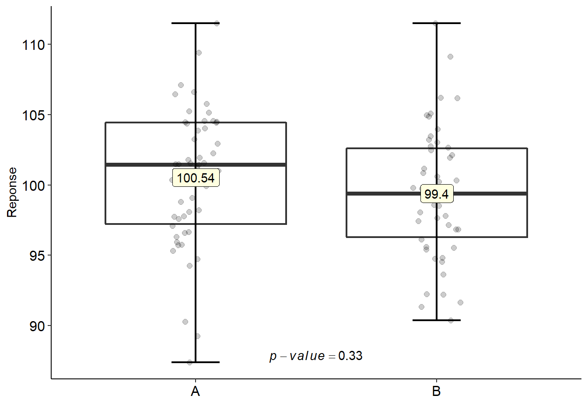
##
## -----------------------------------------------------------------
## Multiple Comparison Test
## -----------------------------------------------------------------
## resp groups
## Country orange 250.3333 a
## NRL 193.3333 b
## FRL 192.3333 b
## Cleópatra 183.6667 bc
## Clove Lemon 182.3333 bc
## Clove Tangerine 180.3333 bc
## Citranger-troyer 165.3333 bc
## Sunki 155.3333 bc
## Trifoliata 140.0000 c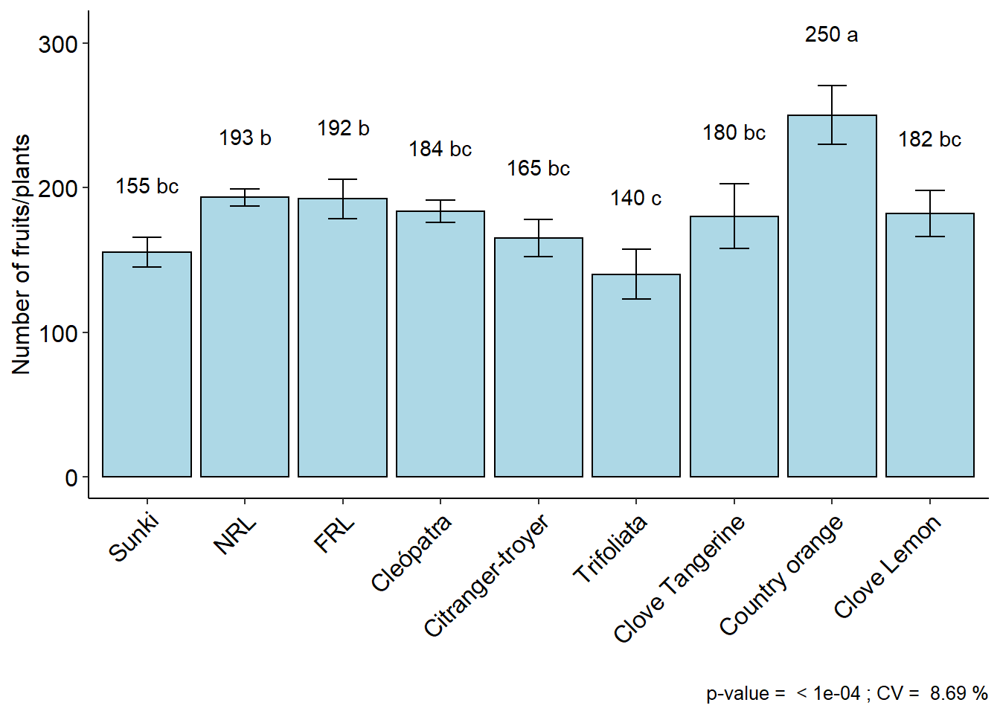
4.2.5 Teste de Friedman
with(laranja, DBC(trat, bloco, resp, test="noparametric"))##
##
## -----------------------------------------------------------------
## Statistics
## -----------------------------------------------------------------
## Chisq Df p.chisq F DFerror p.F t.value LSD
## 32 8 9.314161e-05 Inf 24 0 2.063899 0
##
##
## -----------------------------------------------------------------
## Parameters
## -----------------------------------------------------------------
## test name.t ntr alpha
## Friedman trat 9 0.05
##
##
## -----------------------------------------------------------------
## Multiple Comparison Test
## -----------------------------------------------------------------
## Mean SD Rank Groups
## Citranger-troyer 165.3333 12.858201 12 g
## Cleópatra 183.6667 7.767453 24 d
## Clove Lemon 182.3333 15.947832 20 e
## Clove Tangerine 180.3333 22.368132 16 f
## Country orange 250.3333 20.502032 36 a
## FRL 192.3333 13.650397 28 c
## NRL 193.3333 5.773503 32 b
## Sunki 155.3333 10.503968 8 h
## Trifoliata 140.0000 17.320508 4 i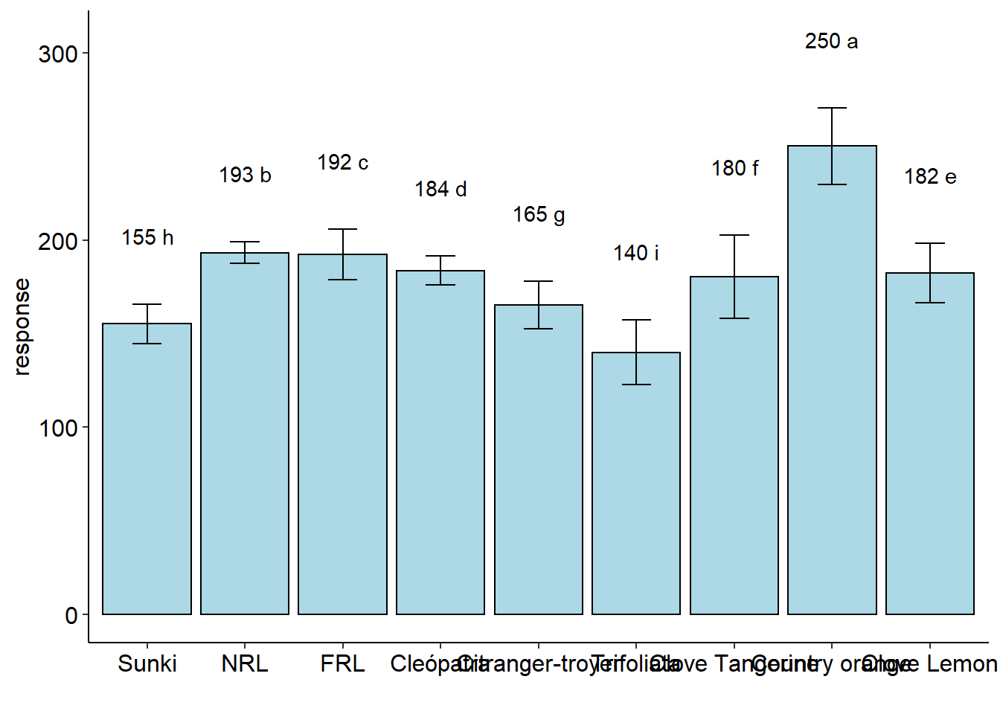
4.3 Delineamento em quadrado latino
- Na sessão de delineamento em blocos ao acaso, observamos que o mesmo é usado para reduzir o erro residual de um experimento utilizando o princípio do controle local;
- No Delineamento em Quadrado Latino, além dos princípios da repetição e da casualização, o princípio do controle local é utilizado duas vezes para controlar o efeito de dois fatores;
- Para controlar esta variabilidade, é necessário dividir as unidades experimentais em blocos homogêneos de unidades experimentais em relação a cada fator controlado.
- O número de blocos para cada fator controlado deve ser igual ao número de tratamentos. Uma vez formados os blocos, distribui-se os tratamentos ao acaso com a restrição que cada tratamento seja designado uma única vez em cada um dos blocos dos dois fatores controlados.
- Os níveis de um fator controlado são identificados por linhas em uma tabela de dupla entrada e os níveis do outro fator controlado são identificados por colunas na tabela.
- A grande restrição dos ensaios em quadrados latinos é que para 2, 3 ou 4 tratamentos teremos apenas 0, 2 ou 6 g.l., respectivamente,para o resíduo.
- Por outro lado, com 9 ou mais tratamentos, o quadrado latino fica muito grande, trazendo dificuldades na instalação, pois, para 9 tratamentos, teremos 81 parcelas.
- Por isso, os quadrados latinos mais usados são os de 5 x 5, 6 x 6, 7 x 7 e 8 x 8.
4.3.1 Modelo matemático
\[\begin{eqnarray} y_{ji}=\mu+\tau_i+\alpha_j+\beta_k+\varepsilon_{ij} \end{eqnarray}\]
\(y_{ji}\): é o valor observado na i-ésima linha e k-ésima coluna para o j-ésimo tratamento;
\(\mu\): é a média geral (ou constante comum a todas as observações);
\(\tau_i\): é o efeito de tratamento, com \(i = 1, 2, . . . , I\);
\(\beta_j\): é o efeito da k-ésima coluna;
\(\alpha_j\): é efeito da j-ésima linha
\(\varepsilon_{ij}\): é o erro experimental, tal que \(\varepsilon_{ij}\)~N(0; \(\sigma^2\)).
O modelo é completamente aditivo, ou seja, não há interação entre linhas, colunas e tratamentos.
4.3.2 Hipóteses e Modelo
\[\begin{eqnarray*} \left\{ \begin{array}{ll} H_0: & \mu_1 = \mu_2 =\mu_i\\[.2cm] H_1: & \mu_i \neq \mu_i' \qquad i \neq i'. \end{array} \right. \end{eqnarray*}\]
| CV | G.L. | S.Q. | Q.M. | Fcalc | Ftab |
|---|---|---|---|---|---|
| Tratamentos | \(p - 1\) | \(SQ_{Trat}\) | \(\frac{SQ_{Trat}}{p-1}\) | \(\frac{QMTrat}{QMRes}\) | \(F(\alpha;GL_{Trat} ;GL_{Res})\) |
| Linhas | \(p - 1\) | \(SQ_{L}\) | \(\frac{SQ_{L}}{p-1}\) | \(\frac{QM_{L}}{QM_{Res}}\) | \(F(\alpha;GL_{L} ;GL_{Res})\) |
| Colunas | \(p - 1\) | \(SQ_{C}\) | \(\frac{SQ_{C}}{p-1}\) | \(\frac{QM_{C}}{QM_{Res}}\) | \(F(\alpha;GL_{C} ;GL_{Res})\) |
| resíduo | \((p-2)(p-1)\) | \(SQ_{Res}\) | \(\frac{SQRes}{(p-2)(p-1)}\) | ||
| Total | \(p^2-1\) | \(SQ_{Total}\) |
rm(list=ls())
data(porco)
with(porco,DQL(trat, linhas, colunas, resp))##
## -----------------------------------------------------------------
## Normality of errors (Shapiro-Wilk
## -----------------------------------------------------------------
## Method Statistic p.value
## Shapiro-Wilk normality test(W) 0.9183353 0.1585848## As the calculated p-value is greater than the 5% significance level, hypothesis H0 is not rejected. Therefore, errors can be considered normal##
## -----------------------------------------------------------------
## Homogeneity of Variances
## -----------------------------------------------------------------
## Method Statistic p.value
## Bartlett test(Bartlett's K-squared) 1.207666 0.7511662## As the calculated p-value is greater than the 5% significance level, hypothesis H0 is not rejected. Therefore, the variances can be considered homogeneous##
## -----------------------------------------------------------------
## Independence from errors
## -----------------------------------------------------------------
## Method Statistic p.value
## Durbin-Watson test(DW) 2.028993 0.2932159## As the calculated p-value is greater than the 5% significance level, hypothesis H0 is not rejected. Therefore, errors can be considered independent##
## -----------------------------------------------------------------
## Additional Information
## -----------------------------------------------------------------
##
## CV (%) = 16
## R-squared = 0.1
## Mean = 3.4331
## Median = 3.39
## Possible outliers = No discrepant point
##
## -----------------------------------------------------------------
## Analysis of Variance
## -----------------------------------------------------------------
## Df Sum Sq Mean.Sq F value Pr(F)
## trat 3 0.2622187 0.08740625 0.2898586 0.8315413
## line 3 0.1065687 0.03552292 0.1178019 0.9463594
## column 3 1.4274687 0.47582292 1.5779347 0.2899683
## Residuals 6 1.8092875 0.30154792## As the calculated p-value is greater than the 5% significance level, H0 is not rejected##
## -----------------------------------------------------------------
## Multiple Comparison Test
## -----------------------------------------------------------------
## [1] "H0 is not rejected"## 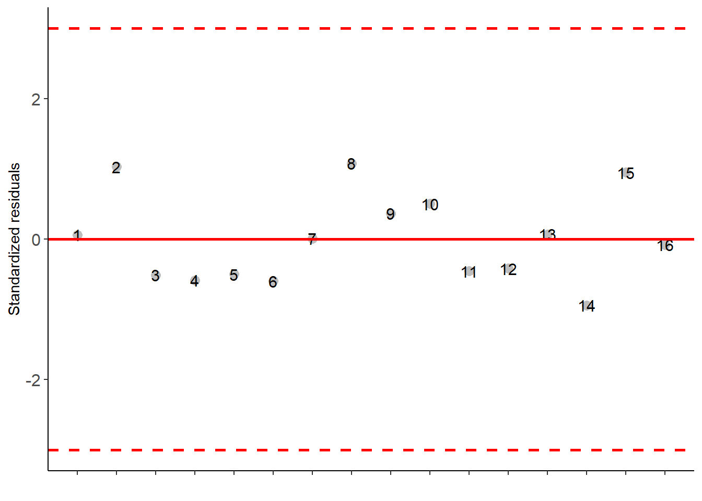
4.4 DIC e DBC por glm
rm(list=ls())
data("aristolochia")
attach(aristolochia)## The following object is masked from pomegranate (pos = 3):
##
## trat## The following object is masked from enxofre:
##
## resp## The following object is masked from cloro:
##
## resp## The following object is masked from pomegranate (pos = 6):
##
## tratresp=resp/4 # total germinated seeds
# the value 25 is the total of seeds in the repetition
DIC.glm(trat, cbind(resp,25-resp), glm.family="binomial")##
##
## -----------------------------------------------------------------
## Analysis of deviance
## -----------------------------------------------------------------
##
## Null deviance 1079.917
## Df Null deviance 79.000
## -----
## Residual deviance 173.344
## Df residual deviance 75.000
## p-value(Chisq) 0.000
## -----
## AIC 368.183## As the calculated p-value, it is less than the 5% significance level.The hypothesis H0 of equality of means is rejected. Therefore, at least two treatments differ##
##
## -----------------------------------------------------------------
## Multiple Comparison Test
## -----------------------------------------------------------------
## trat prob SE asymp.LCL asymp.UCL .group
## 15 15 0.00 0.00 0.00 0.00 d
## 20 20 0.05 0.01 0.02 0.07 c
## 25 25 0.47 0.02 0.43 0.52 b
## 30 30 0.74 0.02 0.70 0.79 a
## 35 35 0.53 0.02 0.49 0.58 b